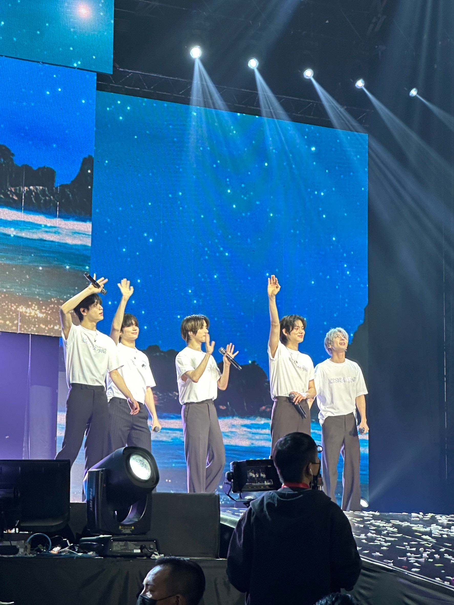
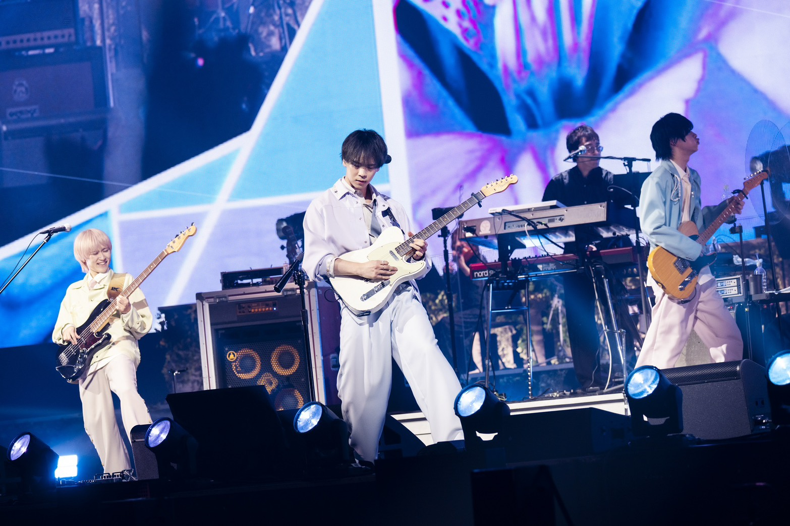
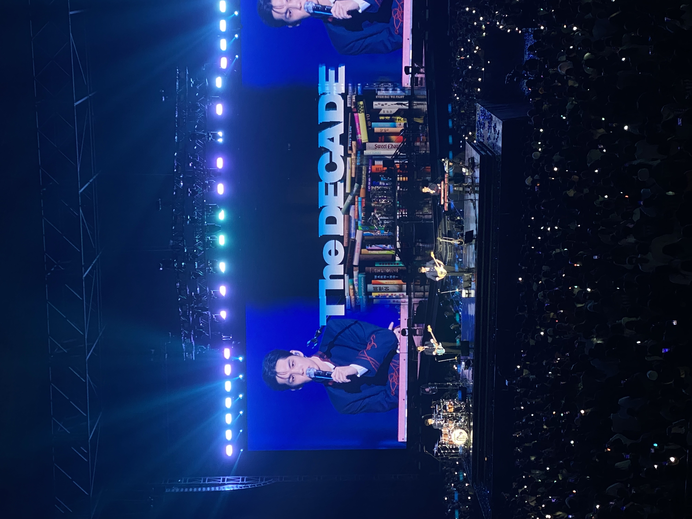

分享我的偶像，目標是看過我喜歡的團體的演唱會

我從 BTS 開始接觸K-pop，之後也關注了多個團體與歌手。他們的音樂與奮鬥歷程帶給我許多力量，並激勵我在生活中更加努力。同時也認識了很多不同的藝人，例如: TXT SEVENTEEN Day6 TWS TWICE IU。 現在主要追的是TXT。

J-pop讓我對日語產生興趣，也加深了我對日本文化與音樂風格的了解。我特別喜歡 マルシィ (Marcy)，以及 Mrs. GREEN APPLE。

每次演唱會都是我最期待的時刻，能親眼看到偶像表演真是太幸福了。(點我看更多)